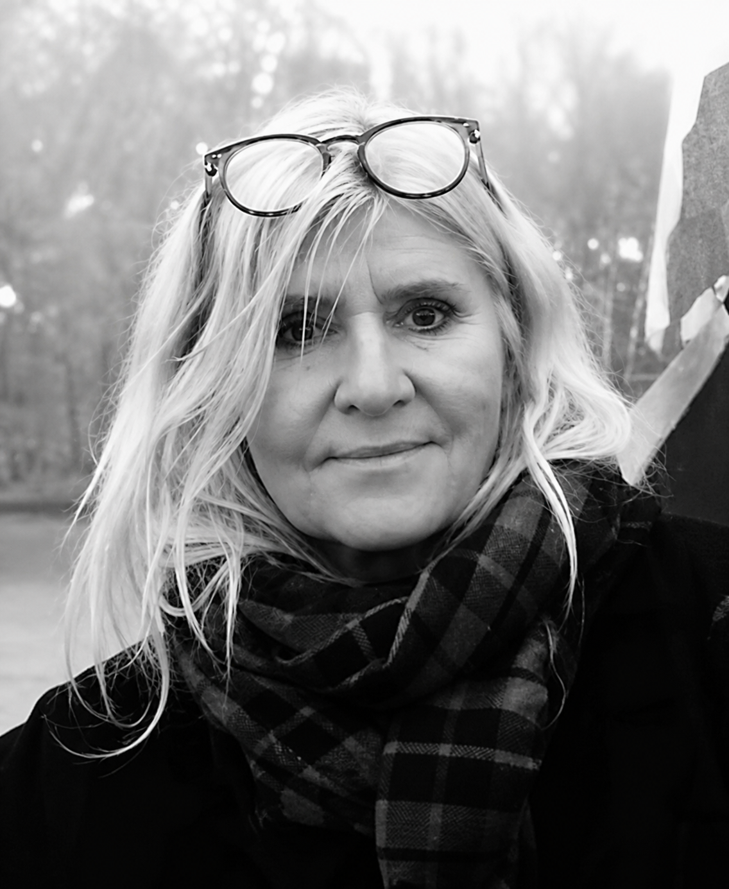

Materiały
Drewno lipowe, kredowy grunt, naturalne pigmenty i złoto 23,75k.
TWORZĘ OBRAZY, KTÓRE SĄ DLA MNIE ŚCIEŻKĄ DO PRAWDY... WYBIERAM TEMATY ZWIĄZANE Z TAJEMNICĄ ISTNIENIA, RELACJĄ Z PANEM BOGIEM, KTÓRE PRZEDE WSZYSTKIM PROWADZĄ DO KONTEMPLACJI I ŚWIATŁA...
Zobacz obrazyElżbieta Żukowska-Jóźwiak, absolwentka PWSSP w Łodzi (obecnie ASP), studiowała na Wydziale Malarstwa i Grafiki (dyplom w 1986 roku). Od ponad trzydziestu lat tworzy obrazy o tematyce religijnej - chrześcijańskiej.
Tajemnica Życia, Śmierci i Zmartwychwstania Jezusa Chrystusa stały się dla niej niewyczerpanym źródłem inspiracji. Szczególnym punktem odniesienia w obszarze malarstwa jest dla artystki ikona bizantyjska jako sztuka głęboko teologiczna, a także wybrane dzieła wczesnorenesansowe i barokowe.

"Bóg daje każdemu według jego właściwości, jest bowiem jak źródło, z którego każdy czerpie swoim naczyniem."
Ikona nie jest tylko obrazem. To modlitewne spotkanie, opowieść o świętości i spojrzenie poza czas. Pracuję w technice tempery jajowej oraz złocenia płatkowego.
Drewno lipowe, kredowy grunt, naturalne pigmenty i złoto 23,75k.
Każdy etap powstaje w rytmie pracy duchowej: szkic, pozłota, laserunki, podpis i werniks.
Realizuję ikony na uroczystości rodzinne, do świątyń oraz jako wyjątkowe prezenty duchowe.